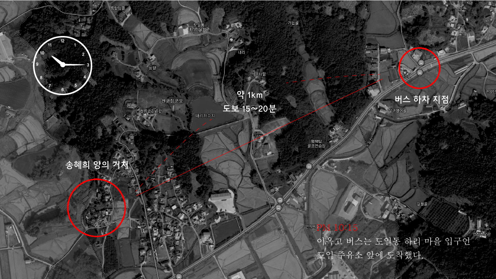

Cold Case Profiling
About
Profiling
1. 송혜희 양 실종 사건
2. 부산 아동 연쇄 살인 사건
3. 사바이 주점 학살 사건
Report
Contact
1. 송혜희 양 실종 사건
I. 도입
II. 전개
III. 분석
1) 프로파일링 맵
2) MISSING
3) 수사 과정
4) 또다른 분석
IV. 의혹
V. 결말
공부하고 올게요.
송혜희 양 실종 사건
1999년 2월 13일 PM 10:00 경 당시 고등학생이던 송혜희(17) 양이 실종된
사건으로 2014년 2월 공소시효가 만료되 현재까지도
영구 미제 사건
으로 남아있다.
지금도 가끔 ‘실종된 송혜희 좀 찾아주세요!’라는 현수막을 볼 수 있을 정도로
실종자의 아버지는 자신의 딸을 찾는 데에 여념이 없으시다.
사건일지

사건 분석
[ 1999년 2월 13일, 송혜희 양 실종 사건 상황도 ]
[ 실종 당시 지역의 로드뷰 ]